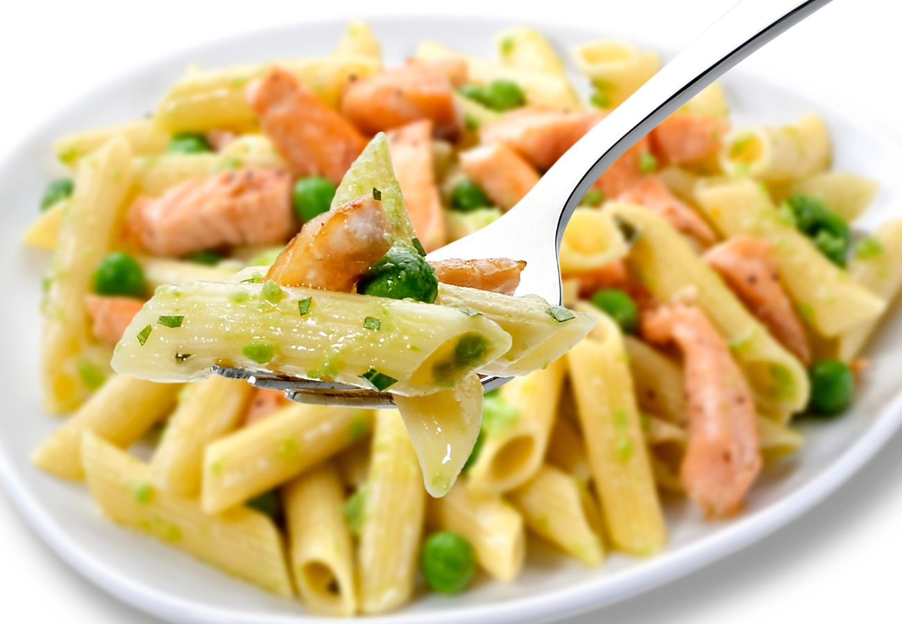

Home
Receta de Macarrones con salmon

Descripción
Los macarrones con salmón y nata son un plato cremoso y delicioso que combina la suavidad de la pasta con el sabor ahumado o fresco del salmón.
Se preparan cocinando los macarrones al dente y mezclándolos con una salsa hecha a base de nata (crema de leche), salmón en trozos
(puede ser fresco o ahumado), ajo, cebolla y un toque de queso parmesano o eneldo para realzar el sabor. Es una receta rápida y sofisticada, ideal para una comida
reconfortante y llena de sabor.
Ingredientes
- 250 g de macarrones
- 200 g de salmón (puede ser fresco o ahumado)
- 200 ml de nata para cocinar (crema de leche)
- 1 diente de ajo (opcional)
- media cebolla (opcional)
- 2 cucharadas de mantequilla o aceite de oliva
- 50 g de queso parmesano rallado (opcional)
- Sal y pimienta al gusto
- Eneldo fresco o seco (opcional, para decorar)
Pasos
- Cocinar la pasta:
- Hierve agua con sal en una olla y cocina los macarrones según las instrucciones del paquete hasta que estén al dente. Luego, escúrrelos y reserva un poco del agua de cocción.
- reparar el salmón:
- Si usas salmón fresco, córtalo en trozos pequeños y cocínalo en una sartén con un poco de aceite de oliva o mantequilla durante 2-3 minutos por cada lado. Si usas salmón ahumado, simplemente córtalo en tiras y resérvalo.
- Hacer la salsa:
- En la misma sartén, derrite la mantequilla y sofríe el ajo y la cebolla picados hasta que estén dorados. Luego, añade la nata y cocina a fuego medio-bajo por 2 minutos.
- Integrar los ingredientes:
- Agrega el salmón a la salsa y mezcla bien. Luego, incorpora los macarrones escurridos y mezcla nuevamente. Si la salsa está muy espesa, añade un poco del agua de cocción de la pasta para darle una mejor textura.
- Toques finales:
- Ajusta la sal y la pimienta al gusto. Agrega queso parmesano rallado y mezcla bien.
- Servir:
- Decora con un poco de eneldo fresco o seco y sirve caliente.